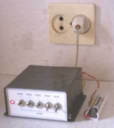
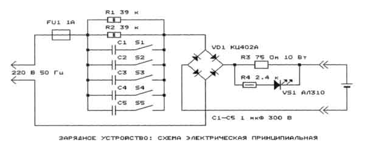

Зарядное устройство для Ni-Cd и Ni-MH аккумуляторов

Зарядное устройство предназначено для зарядки никель-кадмиевых батарей емкостью 125 мА ∙ час (7Д-0.125) и никель-кадмиевых или никель-металлогидридных аккумуляторов емкостью от 500 до 3600 мА ∙ час.
Технические характеристики:
Схема устройства:

Описание:
Зарядное устройство включается в сеть переменного тока 220 В 50 Гц через предохранитель FU1 1 А. Резисторы R1, R2 и конденсаторы C1 - C5 используются в качестве балластного сопротивления для ограничения зарядного тока. Величина зарядного тока зависит от количества параллельно подключенных конденсаторов и устанавливается ступенчато с помощью переключателей S1 - S5. Выпрямленный с помощью диодного моста VD1 зарядный ток подается на заряжаемый аккумулятор через резистор R3, который служит для ограничения броска тока в момент включения устройства в сеть и для защиты диодного моста при неправильном подключении аккумулятора (обратная полярность). Посредством светодиодного индикатора VS1, включенного через токоограничительный резистор R4, за счет падения напряжения на резисторе R3 можно проконтролировать работу устройства и приблизительно оценить величину зарядного тока. Резисторы R1, R2 также используются для разрядки конденсаторов, чтобы предотвратить поражение персонала током при случайном одновременном касании контактов сетевой вилки и клемм отключенного от сети зарядного приспособления. Заряжаемый аккумулятор (или батарея) помещается во внешний адаптер, подключаемый к зарядному устройству с помощью разъема. Конструкции адаптеров определяются типом и количеством заряжаемых аккумуляторов, кроме того, она должна обеспечивать защиту оператора от случайного касания клемм для подключения аккумулятора.
Состояние разработки:
Зарядное устройство используется в бытовых условиях для зарядки аккумуляторов различных типов, в том числе подзарядки свинцово-кислотных герметизированных аккумуляторов емкостью до 12 А ∙ час.
31.07.2003
13.10.2005
27.01.2006
22.06.2010
Альтернативные источники
энергии
Компьютеры и
Интернет
Магнитные поля
Механотронные системы
Перспективные
разработки
Электроника и технология